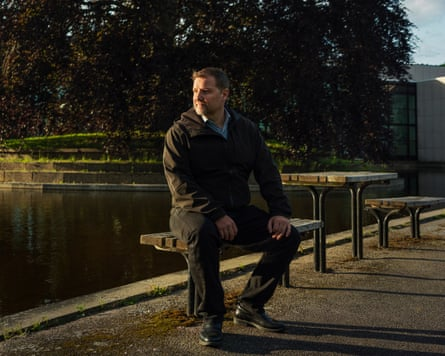
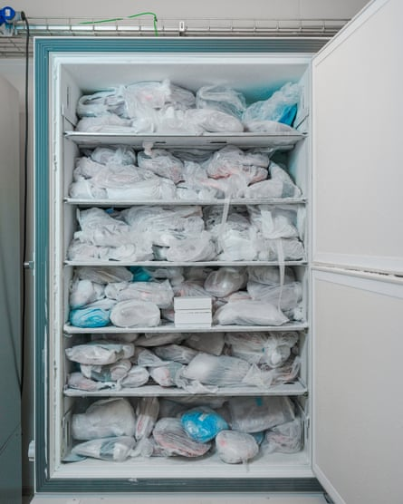
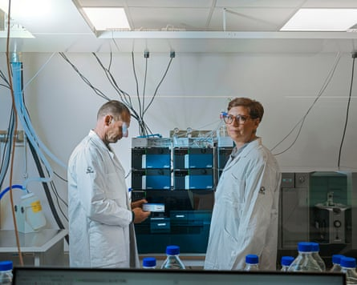

I f Agneta Bruno closes her eyes, the soapy smell takes her back to childhood. Cycling home to the barracks where she lived with her father, an air force major, she would whiz through patches of snowy-white foam near the entrance of the base. The foam resembled the bubbles you get in the bathtub, just thicker. “I had to lift my feet up to avoid getting wet,” Bruno told me.
Aqueous film-forming foam (Afff) is a miracle of firefighting: it’s highly effective in putting out flammable liquid fires, such as those caused by jet fuel spills. Chemicals in the foam create a stable blanket over liquid fuel, trapping the flammable vapours and extinguishing the fire. At the air force base in Bruno’s home town of Kallinge in Sweden , firefighters were trained to douse flames using the foam. New recruits came every few weeks, so the training sessions were pretty constant. Afterwards, the foam would soak away into the sandy soil and disappear.
Kallinge is a small, tired-looking town in southern Sweden, dotted with small, wooden houses in various colours, many in need of fresh paint. A large factory dominates the centre: it has been making cast-iron cookware for more than 300 years. The military base is on the outskirts, a short drive through a pine forest. The population numbers about 4,500, and the air is so clean that you can smell someone smoking from across the street.
On 16 December 2013, the residents of Ronneby municipality, which includes Kallinge, heard on the news that their tap water had been switched over to a different source. The water supply, which had won awards for being one of the cleanest in Sweden, had been found to contain high levels of per- and polyfluoroalkyl substances, or Pfas. These synthetic chemicals, widely used in industrial processes and manufacturing, are often called “ forever chemicals ” because they do not break down easily and can stay in the environment for hundreds of years, or even longer.
News reports said the chemicals had seeped into the municipal water system from the firefighting foam used at the airbase. It had been going on for years, even decades, but no one had previously thought to check the water for Pfas , which have no taste or smell. Nonetheless, the municipality’s message to residents was reassuring: the old water supply had now been shut down and switched over to a clean source.
To many in Ronneby, including municipality staff, forever chemicals were still largely a mystery. “In December 2013, Pfas was completely unknown to us,” said Roger Fredriksson, who was mayor at the time. Ninnie Wikström, a green tech entrepreneur now in her early 40s who has lived in the area on and off since she was a child, was not unduly worried by the announcement. “Nobody knew what it was and how dangerous it was,” she recalled. Herman Afzelius, Wikström’s ex-husband, an IT business manager with startling blue eyes who moved to Kallinge in 2002, also saw no great cause for alarm: yes, there had been something in the water, but now it was fine. He got on with his life. It was almost Christmas, after all.
The next day, 17 December, the Swedish Food Agency made an announcement which to many sounded reassuring: the chemicals did not “pose an acute health risk”. While drinking a cup of Ronneby’s tap water wouldn’t make you acutely sick, the issue was the long-term consequences. In the past 12 years, far more research has been conducted into links between Pfas and diseases such as cancer and diabetes, but even back in 2013, a reasonable amount was known about the health risks associated with these chemicals. Production and use of perfluorooctane sulfonate, or Pfos, one of the main types of Pfas found in Ronneby’s water, had been restricted in the EU since 2009 (though firefighting foams were excluded from that restriction).
A few days after the initial discovery, Ronneby’s administrators contacted researchers at nearby Lund University. They knew that the drinking water had been heavily contaminated with Pfas; the question was to what extent this showed up in local people’s blood. Since children are particularly vulnerable to chemical pollutants, they would start by testing 11-year-olds from Ronneby’s schools. In February 2014, the blood samples arrived at the lab of Christian Lindh, an occupational health researcher. When Lindh ran his tests, he found the results so impossibly high, he had to run them again, to “double check”. Children from affected areas had more than 37 times the amount of Pfas in their blood than children from outside the contaminated zone.
Once again, the municipality attempted to ease locals’ concerns. In a press release, a Lund physician was quoted as saying there was no reason to expect “that the children will develop any diseases in the future caused by Pfas”. Since the news about the children’s study was couched in such reassuring terms, Afzelius, like many others in Ronneby, didn’t really start to worry until he received a letter asking him to have a blood test. The letter, adorned with logos of the Ronneby municipality, the Skåne region and Lund University, called for all local residents to get tested for Pfas. “That was actually the first time I reacted. I thought, ‘Why do they want to test my blood?’” Afzelius said.
In the centre of Kallinge, next to a supermarket that serves as a meeting spot for the locals, is a squat, mustard-coloured medical clinic. It was here that people lined up in the spring of 2014 to get their blood tested for Pfas. The queues were long and the atmosphere was tense. People were feeling “a mix of worry, confusion and growing mistrust”, Afzelius recalled.
The results came by post a few months later. Afzelius was shocked by what he read. To help recipients interpret the numbers, the letter included comparison results. Afzelius’s Pfas levels were at least nine times higher than the people from outside the contaminated area. “I instantly thought, OK, damn, this is really, really high,” he said. His case was far from the worst. Some people in Ronneby found themselves staring at numbers more than 1,000 times the level that is, today, considered safe.
It was official: Ronneby was the world’s worst known case of Pfas contamination. But at the time, few outsiders noticed. The media didn’t offer much coverage – that would come later – and the residents were left to work out what all this meant for them. The trouble was that nobody seemed to know.
F ollowing the discovery that he had high levels of Pfas in his blood, Afzelius tried to eradicate forever chemicals from his life. It was close to impossible. He got rid of outdoor clothing that had been treated with Pfas to make it waterproof, and he threw out his microwavable popcorn and baking parchment, but the list of Pfas sources is so long that it was hard to keep up. These chemicals are in saucepans and sun cream, dental floss and carpet fibres, pizza boxes and walking boots. They have been found in meat, fish and eggs. We not only ingest them, we absorb them through our skin. After Afzelius redecorated his kitchen he learned that there were Pfas in wallpaper.
The first Pfas were developed in the 1930s by German scientists and used for insulating electric wiring. Many more types of Pfas followed. Today there may be more than 14,500 forever chemicals, and new ones are constantly added to the list. Pfas don’t decompose at high temperatures or when exposed to aggressive chemicals, which makes them useful in manufacturing. To make Pfas, scientists replace hydrogen atoms attached to carbon with fluorine, creating a bond so strong that the molecule doesn’t interact with other substances, such as water or frying oil. Its strength means that almost nothing can break it down, in the body or in the environment.
Herman Afzelius, one of the key campaigners in the Ronneby Pfas case, at his home in Kallinge.Photograph: Josefine Stenersen
One thing Afzelius couldn’t part with was his Teflon pan: it was just too convenient. Teflon, which is a brand name for a chemical polytetrafluoroethylene (PTFE), was one of the earliest forms of Pfas to be developed in the 1960s. A whitish powder discovered by chance by scientists at the US chemical company DuPont , it proved to be remarkably useful in a wide range of household products. Aside from non-stick pans, it helps lightbulbs handle extreme heat and enables the hot plates in styling tongs to glide over hair.
Like Teflon, the firefighting foam that leaked into Ronneby’s water system was developed in the 1960s. By the 2010s, after years of research, scientists had started to identify links between certain cancers and Pfas in firefighting foam , and in the protective equipment the firefighters wear. There are of course other risk factors for firefighters, including fumes inhaled from fires, which complicates research. What we do know, Jeff Burgess, a toxicologist at the University of Arizona told me, is that exposure to certain chemicals is associated with increased cancer risks – such as PFOA, a type of Pfas, and testicular cancer.
As scientists amassed more evidence of the detrimental health effects of Pfas, the list of places where groundwater or soil had been contaminated by Afff foam kept growing: Korsør in Denmark; El Paso County in the US; Saint-Louis in France. In the UK, several military sites are now under investigation after Pfas from firefighting foams leached into drinking water sources.
Yet none of these places is even close to Ronneby in terms of the levels of contamination. The Pfas levels that were found in Ronneby’s water were not just “high” – they were the highest ever discovered in any municipal drinking water: 2,450 times above the safety threshold that would be introduced in 2023. “The population was extremely exposed, even compared with other highly exposed populations,” said Annelise Blomberg, an epidemiologist at Lund University.
Kallinge in the Ronneby municipality, Sweden.Photograph: Josefine Stenersen
Many citizens across the globe have taken up the fight against Pfas. In the US, under a settlement announced in May , the industrial chemicals company 3M will pay up to $450m to compensate the people of New Jersey for contaminating their environment with forever chemicals. Perhaps the most famous legal battle over forever chemicals took place in West Virginia and Ohio, where people living near the DuPont Teflon-manufacturing plant, who had suffered damage to their health and to their livestock from chemicals in the water, launched a class action lawsuit. (The story became the basis for the movie Dark Waters.)
As part of a settlement reached in 2004 , DuPont agreed to fund a study into the effects of PFOA. By 2013, the results were pouring in: scientists found links between PFOA and testicular, kidney, prostate and ovarian cancers and non-Hodgkin lymphoma. They found evidence of a higher risk of thyroid problems . They found a “probable link” between exposure to PFOA and conditions including high cholesterol and ulcerative colitis .
But, by this stage, these chemicals were everywhere.
W hen Afzelius talks, he looks straight at you, eyes wide, his face earnest. His friends say he is a fighter, determined, committed. The word “stubborn” gets mentioned, too. “I like to get details, dig into stuff,” is how he put it to me. After he received his blood test results, Afzelius read many of the early studies on Pfas. The more he learned, the more he felt that the government’s message was too casual. “The communication from the start has been: no need to worry, no one’s going to be sick,” he said. He was increasingly worried about what all this might mean for him and for his daughter with Wikström, Nahla, who was four.
In June 2014, Afzelius started a Facebook group, which quickly gained hundreds of members. People shared test results and posted links to studies. They managed to get a meeting with city officials, representatives of the armed forces and researchers from Lund University. It was held at a school in Kallinge. So many people showed up that the crowd spilled out of the low brick building. “The crowd was like when you look at pictures from the 18th century – people standing with flaming torches and pitchforks,” recalled Sara Blixt.
Herman Afzelius and Ninnie Wikström’s daughters, Nahla (left) and Lovis, in the garden of their home in Kallinge.Photograph: Josefine Stenersen
At the meeting, the audience kept asking: will Pfas make us sick? Can you get rid of it from your blood? Some people started shouting – very uncharacteristic behaviour in Sweden. Representatives from the municipality, standing on stage, asked people to “keep it down” and “stay calm”, but to little effect. “I remember someone was shouting, “But what are you going to do? We are poisoned!’” Blixt said. Afzelius found some of the experts condescending. He recalled one of them saying, “I’m a chemist. Are you?” He had the feeling that the officials just wanted to move on.
Afzelius and a number of other locals decided to take matters into their own hands. The first meeting of what became the Pfas Association took place around Afzelius’s kitchen table. The six people gathered became the board of directors. They wrote their ideas on Post-it notes and stuck them all over Afzelius’s kitchen cabinets. By the time the meeting finished, after three or four hours, they had resolved they would take their case to court.
It was a big gamble. In West Virginia and Ohio, the affected residents who filed a class-action lawsuit against DuPont ended up securing a $670m settlement . Nothing like that was possible in Ronneby. “Many countries, including Sweden, don’t have legislation equipped for this type of lawsuit,” says Markus Segerström, a lawyer who represents dozens of people from Ronneby against the municipal water provider. Instead, each person had to sue on their own, risking their own money. And they couldn’t sue for damages simply because their water had contained forever chemicals. “Under current Swedish law, you typically need a diagnosed illness – which most people with elevated Pfas levels in their blood do not have,” Segerström said. “Part of our argument is that the courts should, through case law, expand the scope of compensation to include Pfas exposure even without a formal diagnosis. Historically, compensation in Sweden has been limited to concrete harm or clearly documented economic losses – such as a doctor’s visit or a prescription. You need to prove specific costs.”
Sweden doesn’t have a no-win, no-fee system: if you lose, you end up paying all the legal bills and your opponent’s, too. “It’s scary,” Afzelius said. “Here all the financial risk has been on us.” Since Ronneby is home to many low-income families, even the initial court filing fee, 2,800 kronor per person (£210), was too much for some. What’s more, many people in Ronneby either worked for the armed forces or the municipality, or were subcontractors to one of them, so they were “afraid to speak up, fearing they might lose their jobs or face a backlash”, Afzelius said.
The case launched in July 2016 with 165 plaintiffs. The media, which had initially followed the municipality’s line on the relatively low risk to residents, now ran stories about Pfas “poisoning”. The case dragged on for months, and then years; it was a new area of law and a lot of evidence had to be gathered, said Johan Öberg, the plaintiffs’ lawyer. As years passed, the legal costs added up. By 2021, a family of four could find their costs reaching 240,000 kronor (£18,000), which would only be recouped if they won. Several people abandoned legal action because they ran out of money. The stress was immense. Afzelius felt personally responsible for the fate of his friends and neighbours. “I started this,” he said. “What would happen if we lost? We would still be poisoned for the rest of our lives, and then have to pay for it.”
Agneta Bruno with her horse at a paddock in Kallinge.Photograph: Josefine Stenersen
To make things worse, this was not a simple case of heroes versus villains: the people of Ronneby were effectively suing their own local government, since the water company is wholly owned by Ronneby municipality. “It’s really, really hard emotionally to fight against the people that are supposed to protect you,” Afzelius said.
When approached for comment, the current mayor, Ola Robertsson, said: “We are sorry if anyone in Ronneby feels abandoned in connection with the Pfas issue. We fully understand that this is a difficult and emotionally charged situation. The municipality strives to represent all our residents to the best of our ability, and we take their concerns very seriously.”
For Wikström, who was among the plaintiffs, the attitude of the local government was bewildering. “If they could just say, ‘Sorry, you know what, we’ll take care of you now.’ But no. We need to fight, and fight, and put money into this struggle, instead of just getting help.” Worse, doctors don’t tend to stay long in Ronneby, and newcomers are often unaware of the risks of Pfas. “We say to the doctors: ‘We have high levels of Pfas,’ and most of them are just, like, ‘OK, what does that mean?’” Wikström said. Perhaps, she thought, winning the case would change that.
O n 13 April 2021, Wikström, Afzelius and the remaining board members of the association – Lollo Karlsson, Katarina Tilholm, Cilla Oijens, Stefan Hansson – gathered around a laptop in the glass porch of Afzelius’s house. No one could sit still. After years of dealing with paperwork, meetings and legal bills, the verdict from the district court was due to be announced online.
When the result finally came at 2pm, they erupted with joy. The water company was deemed responsible for causing personal injury to the residents whose drinking water had been contaminated. “It was a moment of pure, shared victory,” Afzelius said.
Their happiness was short lived. The water company appealed, and on 20 December 2022 the ruling was reversed. The court said the plaintiffs had failed to demonstrate that they had suffered direct harm because of Pfas. Anyone who fell ill would have to prove that it was directly caused by Pfas – which, in spite of the studies that have shown links between Pfas and diseases including cancer, is still an impossible feat. “That’s what we struggle with as epidemiologists. It’s very difficult to prove causality,” said Christel Nielsen, an environmental health researcher at Lund University.
Following the appeal, the plaintiffs had to pay the water company’s legal bills on top of their own. “The air was knocked out of us. We felt completely abandoned,” Afzelius said. Ten of the plaintiffs quit the case right then – they couldn’t take on the financial risk of continuing. Others were simply exhausted by the entire process: the waiting, the emotional toll, the uncertainty.
Biological samples stored at Lund University as part of the Pfas health study in Ronneby.Photograph: Josefine Stenersen
The remaining plaintiffs decided to take the issue to the supreme court. They had to act quickly: they only had a window of three weeks to prepare their case. By then, Swedish media were giving the case a lot of attention, and people across the globe were watching the story unfold. One of them was Robert Bilott, the lawyer, portrayed by Mark Ruffalo in Dark Waters , who had led the legal battle against DuPont in West Virginia and Ohio. “I’ve been closely following the developments in the Pfas litigation in Sweden,” Bilott told me, adding that he was particularly interested to see whether the Swedish court would recognise Pfas blood contamination as a compensable injury.
The questions raised by the Ronneby case were not just legal ones, but also scientific. Nielsen became a researcher at Lund University in 2016, after the Ronneby scandal broke, and started working on the case right away. She compares her research into the effects of Pfas to building a puzzle out of many scattered pieces and trying to figure out the big picture.
In her orderly, bright office on the outskirts of Lund, Nielsen has folders full of grant applications. She and her team of researchers are permanently short on staff and money. So far, they have managed to scramble enough to publish just over a dozen studies. They found that women in Ronneby whose water was contaminated had an increased risk of polycystic ovary syndrome – a chronic, incurable condition that can reduce fertility. They found an 18% increased risk of type 2 diabetes, 19% higher susceptibility to Covid-19 , and higher risk of osteoporosis .
As for cancer rates, the research needs updating. A 2022 study conducted on data up to 2016 showed “no overall excess risk” in the contaminated area for all types of cancers , but “modestly increased risk of kidney cancer”. Nielsen believes the results might differ now. “We know that for cancer the latency period is often more than 10, 15 years,” she said.
In the autumn of 2021, Afzelius noticed a lump in his right arm. It was firm, about the size of half an egg. At first, he didn’t make much of it – he thought it was just the result of pushing himself too hard in the gym. But when the lump kept growing, Afzelius went to see a doctor. After several biopsies, the lump proved to be an inflammatory leiomyosarcoma, an ultra-rare subtype of a rare cancer – so uncommon that only a couple of dozen cases have been reported in medical literature. That means the numbers are too small to reach statistical significance. When I asked if leiomyosarcoma would show up in the research on Pfas, Nielsen shook her head. “We can only study what we can study,” she said.
Yet Afzelius is not the only person in town who has suffered from leiomyosarcoma. Royne Robertsson, who used to work at the air force base in the early 2000s cleaning firefighting equipment, had major surgery on his left leg in 2012 to treat a variant of that same rare cancer. Robertsson often thinks of the firefighting foam that would cling to his legs as he cleaned. “Nobody told me it was dangerous,” he said.
Sara Blixt, a resident of Kallinge who attended the early public meetings about the Pfas contamination.Photograph: Josefine Stenersen/The Guardian
Among the original six board members of the Pfas association, four have developed cancer since 2018, three of them under the age of 50: Afzelius, Karlsson and Tilholm. One, Thomas Lähdet, died of cancer in 2018. “Most of the people got sick after 2013,” Afzelius said. “We’re not even part of their statistics.”
Funding problems mean it’s difficult for Nielsen and her colleagues to answer all of the questions the people of Ronneby may have about their health. For now, she is focusing on one issue she finds particularly important, and which bothers Afzelius and Wikström, too: how Pfas are passed from one generation to the next, and what that legacy means for their children’s future wellbeing.
A t Lund University, there is a room lined with fridges full of plastic bags that contain stiff, reddish discs. These are samples of placentas collected from women who gave birth in Ronneby between 2015 and 2020, for a study of how Pfas are passed from one generation to the next, and what effects these forever chemicals may have on children. It’s not just placentas: the fridges also contain samples of umbilical cord blood and breast milk.
Wikström’s placenta is not one of those in the fridge. When she was pregnant with her second daughter, Wikström was all about organic: she used organic skincare and bought organic produce, while avoiding processed foods and sugar. And when she gave birth to Lovis in 2016, she asked for delayed umbilical cord clamping so that her daughter could get as much nutrient-rich cord blood as possible. It was only later, when the Ronneby mother-child studies were in full swing, that Wikström learned how easily Pfas flows from the mother to her child. “I wanted to be a good mother,” Wikström said. “I was so stupid.”
Many mothers in Ronneby choke up when they talk about passing Pfas to their children. “I think it’s a horrible load to put on parents,” Nielsen said. For some, however, recent findings have provided relief. Blixt, who frequently checks her teenage sons for lumps, felt guilty about having bottle-fed them when they were tiny, dissolving the formula milk in what turned out to be contaminated water. “I actually had to go to therapy for this,” she said. Recently, she read a study showing that the breast milk of Ronneby’s mothers also contained Pfas. While the news was obviously disturbing, for Blixt, it was almost a relief: it meant that whether she had chosen to breastfeed or to bottle feed, the damage would have happened anyway.
Researchers Christian Lindh, left, and Christel Nielsen, at Lund University, who investigated how Pfas exposure in Ronneby affected human health.Photograph: Josefine Stenersen/The Guardian
Studies by Nielsen and her colleagues show that children in Ronneby with high exposure to Pfas suffer higher risk of developmental language disorders , “which is a useful proxy for other neurodevelopmental outcomes”, Nielsen said. Other research points to a higher risk of congenital malformations , liver disease and cancer . There appear to be problems with the children’s immune systems , too – vaccines, as other groups’ research showed, do not seem to work as well in children affected by Pfas. Nielsen’s newest study also suggests that these children are more prone to certain kinds of infections, such as ear infections.
Both Lovis and Nahla are home sick a lot, their parents said. Afzelius worries about Nahla. “It feels like her immune system is not good,” he said. Of course, research can’t tell any parent for sure that their child’s immune systems were affected by Pfas – it can only show general patterns across populations. We don’t know how long the effects may last, either, or whether they may be reversed over time. But these unknowns are not exactly comforting. “It’s understandable,” Nielsen said, “such uncertainty makes parents worried.”
O n 5 December 2023, Nahla, who was now 14 years old, was sitting right next to her father on their porch, surrounded by friends from the Pfas association. Their eyes were focused on a TV screen, this time awaiting the final verdict from Sweden’s supreme court on their cases. When the news came, they jumped to their feet and Wikström cried out with joy. Finally, finally, they had won – and there wouldn’t be any more appeals. The court ruled that simply having Pfas in your bloodstream constituted personal injury, whether you were sick or not. It was unprecedented. “The supreme court had to create new case law,” Segerström said.
The world was watching. In the US, Harry Deitzler, a West Virginia attorney who worked with Bilott, was “thrilled” to hear that the association had won the case. In Italy, Laura Facciolo of Mamme No Pfas, a group of parents fighting forever chemicals contamination in the Veneto region, was galvanised by the verdict. “I really hope Italian judges will take inspiration from this,” she said.
Yet for those in Ronneby, the story was far from over. Soon after the supreme court’s announcement, Afzelius met his lawyers. “They said to me, OK, now it begins,” he recalled. In Segerström’s office, phones were ringing 24/7: people wanted to file new lawsuits against the municipal water company, this time hoping it would lead to something more concrete: a payout, a healthcare programme. One hundred and fifty decided to sue. It may take years before they get a resolution, Segerström said.
In the meantime, new treatments offer some hope. A cholesterol-lowering drug, cholestyramine, has been found to decrease levels of Pfas in the blood by 15% to 44% . This could be particularly helpful, Nielsen said, “if we could target young women before they have their first child”. This way, they may not pass such a high level of Pfas to the next generation.
Legislation is tightening around Pfas, too. In the EU, Pfos and PFOA have been banned in everyday products since 2020, while the US banned PFOA in household goods in 2014. Pfos-based Afff firefighting foams were banned in 2019. Yet this doesn’t mean there are no Pfas in firefighting foams any more, or that consumer products are now safe. Scientists warn that older forms of forever chemicals are simply being replaced by other compounds which may be equally toxic but are currently less well understood. For Nielsen, studying the impacts of pollutants feels like trying to catch a runaway train. “There is no testing before chemicals are released on the market. We are basically chasing these new substances years after they’ve been put on the market in order to understand what health effects they’ve already had,” she said.
To complicate things further, we are still discovering new Pfas in human blood science didn’t even know existed. “Given the immense number of Pfas released to the market, we can assume that we are only capturing a fraction of what is actually present,” said Jana Weiss, an environmental chemist at Stockholm University.
Some in Ronneby are exhausted from hearing about Pfas, and just want the whole thing to be over. “It’s like, if we don’t speak about it, it doesn’t exist,” Blixt said. Afzelius is tired, too, but he is determined to keep going. He wants the world to know about the dangers of Pfas, so another Ronneby doesn’t happen again. Above all, however, he is fighting for the children, he says. With the doses of Pfas she has received through the municipal water as a small child, Nahla, his daughter, will be middle aged before her Pfas levels go down to those of an average Swede. “And no one took responsibility,” Afzelius said, shaking his head. “No one.”